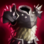
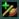
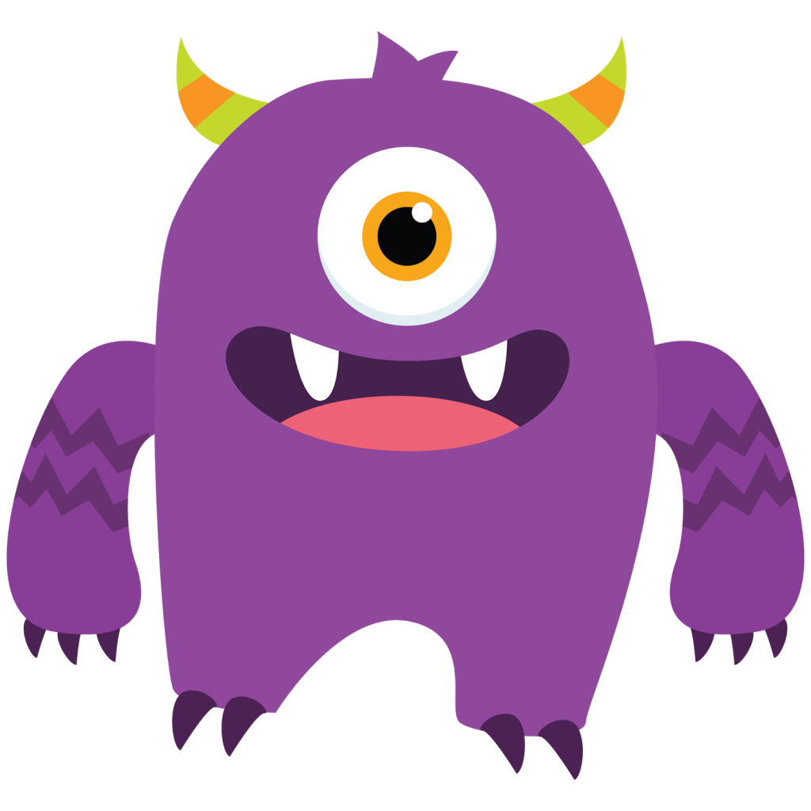

<
Welcome to patch 1.7!
>
Release 28/02/2019 6:13:22 PM
Player
Player's base life steal made some items (like  Thornmail) really weak in early levels
Base  Life steal
7%
0%
Base Critical strike chance
1%
0%
Base
armor
30
32

Monster
Monster's base life steal made some items (like Thornmail) really weak in early levels
Base Life steal
7%
0%
Base Critical strike chance
1%
0%
Base
armor
30
32
new
Monsters can now react to player's bullets and can now jump to dodge them!
new
Now shows monsters energy bar below their health bar
Bug fixes and other changes
updated
The critical strike damage display system has been optimized and updated
new
Killing a monster now displays the amount of gold gained